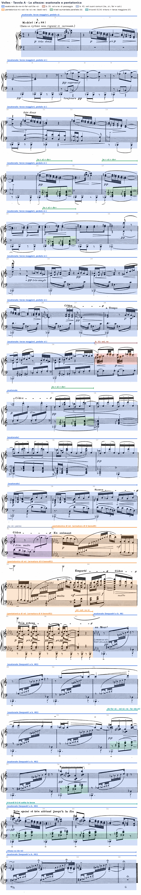
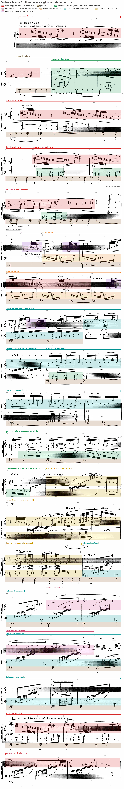
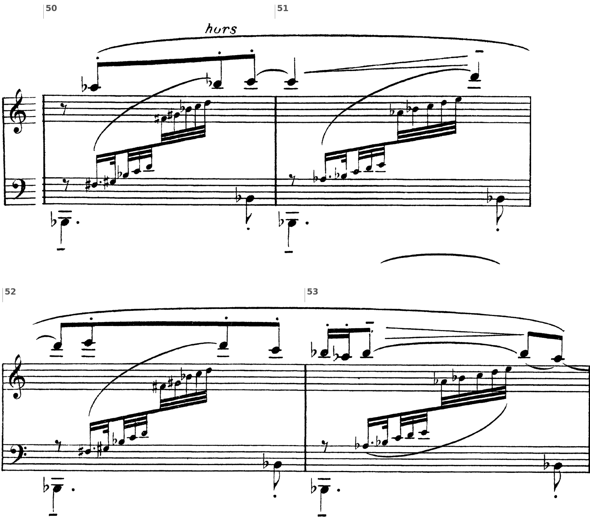
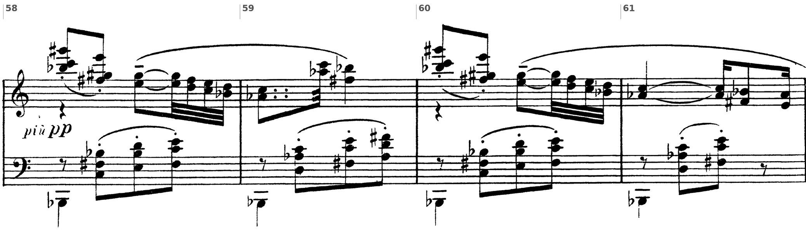
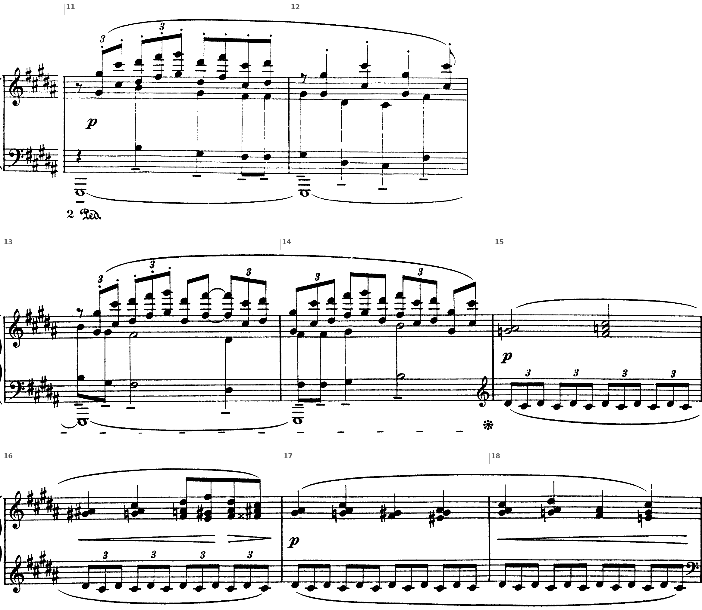

Bb. 1–6 · La prima frase: due linee esatonali in terze maggiori, poi il pedale

- ① b. 1: inciso 1: terze maggiori che scendono per toni
- ② b. 2: la♭–do / sol♯–do: la stessa terza, due grafie
- ③ b. 3: inciso 2: ripete l’inizio
- ④ b. 4: quarte diminuite (fa♯–si♭, mi–la♭): terze maggiori scritte altrimenti
- ⑤ bb. 5–6: chiusa sospesa su do–mi; entra il pedale (pp)
Voiles dura poco più di sessanta battute e non contiene una sola cadenza nel senso funzionale del termine: nessuna dominante, nessuna tonica, nessuna triade maggiore o minore nelle prime quarantun battute. Eppure la pagina si ascolta come un discorso ordinato, con un’esposizione, un episodio contrastante e una ripresa. Le funzioni che nella musica tonale spettano alla cadenza e alla modulazione sono qui distribuite su tre altri piani. La forma è segnata dal cambio di collezione (esatonale, pentatonica, di nuovo esatonale); il centro è affidato a un pedale di si♭, che sostituisce la tonica senza assumerne le funzioni; la continuità nasce da pochissime cellule (la terza maggiore, il passo di tono, la figura che oscilla attorno al la♭), sovrapposte in strati che occupano ciascuno un proprio registro e un proprio ritmo. La ripresa, infine, non ripete l’esposizione: la ricompone, cambiando proprio l’elemento che nelle battute iniziali dava colore all’armonia.
Le bb. 1–41 impiegano soltanto i sei suoni della scala per toni interi do–re–mi–fa♯–sol♯–la♯. Debussy non scrive mai la♯, sempre si♭; il quinto suono compare invece in due grafie, sol♯ e la♭, scelte secondo la convenienza di lettura. Già la b. 2 ne dà la prova più evidente: il bicordo la♭4–do5 è seguito, una biscroma più tardi, da sol♯5–do6, cioè dalle stesse classi di altezze un’ottava sopra, notate in altro modo. De la Motte osserva che la scrittura per toni interi non può rendere graficamente l’equidistanza dei sei suoni e che la stessa altezza viene annotata come sol♯ nella parte superiore e come la♭ in quella inferiore (Manuale di armonia, p. 322); Natoli ricava dallo stesso dettaglio che l’arabesco va letto come sovrapposizione di due scale esatonali e non come successione di terze (Percorsi di analisi musicale, p. 294). Per la stessa ragione numerose terze maggiori sono scritte come quarte diminuite (fa♯5–si♭5 alla b. 2, mi4–la♭4 alla b. 4), come nota anche Galli (Storia della musica 3, p. 228).
Il materiale melodico si riduce a tre profili. Il primo (motivo a) è l’arabesco delle bb. 1–2: due linee in terze maggiori parallele scendono per toni, sol♯5–fa♯5–mi5–re5 sopra mi5–re5–do5–si♭4, fino al la♭4–do5 della b. 2, poi saltano all’ottava superiore (sol♯5–do6) e si posano su fa♯5–si♭5. Le bb. 3–4 ripetono l’inciso e ne prolungano la discesa fino a re4–fa♯4, che sfocia nel do4–mi4 della b. 5. Alla b. 59, dove le stesse battute ritornano, il bicordo acuto è scritto la♭5–do6 e non più sol♯5–do6: la scelta fra le due grafie dipende dal contesto di lettura, non dall’altezza. Il secondo profilo (motivo b, pp expressif, b. 7) è uno spunto di tre suoni, la♭–si♭–do, raddoppiato all’ottava (la♭3–si♭3–do4 sopra la♭2–si♭2–do3) e fermo sul do tenuto della b. 8. Natoli lo definisce un’aumentazione per moto contrario dell’idea iniziale (p. 295): le terze scendono per toni in biscrome, lo spunto sale per toni in crome. Il terzo profilo (figura c, pp très souple, b. 22) è una volatina di quattro biscrome, la♭4–si♭4–la♭4–fa♯4, che gira attorno al la♭ con una nota di volta superiore e ricade di un tono. È costruita, per intero, con i tre suoni comuni alle due scale, e per questo può attraversare il confine di sezione senza cambiare forma: alla b. 42 ricompare come la♭–si♭–la♭–sol♭, con la sola differenza della grafia.
In assenza di funzioni tonali le frasi non terminano con cadenze ma con arresti, che si possono descrivere come cadenze sospese per rarefazione. La prima frase si ferma sul bicordo do4–mi4 tenuto per una battuta e mezza (bb. 5–6) e seguito da una pausa; lo stesso bicordo, sostenuto sopra le ottave di la♭ della sinistra, chiude la b. 14. La b. 21 si arresta sulla terza mi5–sol♯5, la b. 37 sul la♭5 tenuto, la b. 47 sulla terza minore mi♭–sol♭. L’ultima battuta ripete il bicordo do4–mi4 sotto una corona (b. 64), e la circolarità è voluta: il brano si ferma sulla stessa sonorità che concludeva la prima frase. Se il si♭1 debba risuonare sotto questa chiusa la partitura non lo stabilisce. L’ultimo si♭ è percosso alla b. 61; il Ped. scritto all’inizio della b. 62 serve alle scale delle ultime battute e non prescrive di trattenere il pedale precedente.
Una collezione che non contiene quinte giuste non può formare triadi maggiori né minori. Gli intervalli armonici disponibili sono soltanto la seconda maggiore, la terza maggiore e il tritono, con i loro rivolti: ogni aggregato verticale ne è una combinazione. Ne consegue che la forma non può essere articolata dalle cadenze, e l’analisi cerca gli elementi che ne fanno le veci: il centro, affidato a un pedale, e i confini, affidati al cambio di collezione.

Bb. 15–21 · Le terze sopra lo spunto armonizzato: le triadi aumentate

- ① b. 15: la♭+ si♭+ do+: triadi aumentate per moto parallelo di tono
- ② b. 16: come la b. 2
- ③ b. 17: di nuovo le triadi
- ④ b. 18: le terze invertono il moto: la♭–do, si♭–re, do–mi
- ⑤ b. 19: do–mi, re–fa♯ sopra le triadi
- ⑥ b. 20: oscillazione re–fa♯ / do–mi, arrivo su mi–sol♯
- ⑦ b. 21: arresto su mi–sol♯; re in tre ottave; il pedale si distende in minime
Una collezione che non contiene quinte giuste non può formare triadi maggiori né minori. Gli intervalli armonici disponibili sono soltanto la seconda maggiore, la terza maggiore e il tritono (con i loro rivolti), e ogni aggregato verticale ne è una combinazione: bicordi di terza, triadi aumentate, insiemi di tre o quattro suoni che contengono il tritono. Le bb. 15, 17 e 19 lo mostrano con chiarezza. Sotto le terze della mano destra la sinistra suona, per crome e dopo una pausa, la♭3–do4–mi4–la♭4, si♭3–re4–fa♯4–si♭4 e do4–mi4–la♭4–do5: tre triadi aumentate in posizione stretta, con raddoppio all’ottava della fondamentale, che salgono per moto parallelo di tono (tavola A). Lo stesso blocco ritorna alla b. 33. Alle bb. 35–36 compaiono accordi esatonali di quattro suoni, mentre la ripresa introduce un tipo diverso: alle bb. 54 e 58 i tricordi sono do3–fa♯3–si♭3, mi3–si♭3–re4 e fa♯3–do4–mi4, alla b. 59 re3–la♭3–do4, fa♯3–do4–mi4 e la♭3–re4–fa♯4. Si tratta di aggregati formati da un tritono e da una terza maggiore (tipo 0-2-6); in termini tradizionali ciascuno può essere letto come una settima di dominante priva della terza e con la quinta diminuita, oppure come un sottoinsieme della sesta eccedente francese. Nessuna delle due letture regge però sul piano funzionale, perché nessuno di questi accordi risolve: la successione è puramente parallela.
La testura è stratificata per registri, e gli strati entrano uno alla volta: le terze da sole per quattro battute, il pedale alla b. 5 (sul secondo movimento, pp), lo spunto in ottave alla b. 7, una linea interna in ottave alla b. 10, le triadi aumentate alla b. 15, la figura c alla b. 22, l’ostinato alla b. 23. Ogni strato possiede un registro proprio: il si♭1 sta sotto tutto, l’ostinato occupa la zona fa♯3–re4, le terze oscillano fra do4 e do6, il re ribattuto in tre ottave (re4–re5–re6 alla b. 21, re5–re6–re7 alla b. 22) apre lo spazio acuto. De la Motte osserva che in questo linguaggio non esiste una gerarchia a priori fra melodia e accompagnamento, perché gli eventi simultanei sono equiparati (p. 322); la scrittura di Voiles lo conferma, dato che la stessa terza maggiore è ora linea, ora accordo. La densità massima coincide con il centro della sezione B (bb. 43–44), dove la scala pentatonica attraversa quattro ottave e la destra suona accordi pieni; la minima coincide con la contrazione delle bb. 31–32, dove il pedale tace per due battute consecutive.

Bb. 29–41 · La contrazione, la sola eccezione cromatica, il passaggio per suoni comuni
La sezione A conosce una sola eccezione alla collezione esatonale. Alla b. 31 la voce inferiore della destra sale per semitoni fa♯5–sol5–la♭5, mentre quella superiore disegna do6–re6–re♭6–do6; il sol e il re♭ sono note di passaggio cromatiche, come segnala Galli (p. 229), e il bequadro che Debussy rimette davanti al re6 nella seconda metà della battuta conferma la natura transitoria dell’alterazione (cerchi rossi nella tavola A). Natoli legge in questo punto, insieme alla contrazione delle durate che comincia alla b. 29, un momentaneo sgretolamento del materiale (p. 300).

- ① bb. 38–39: spunto b nella voce grave degli accordi; discesa re–do–si♭ alla sinistra
- ② b. 40: «Serrez»: le terzine della sinistra
- ③ b. 41: solo la♭, si♭, fa♯ = sol♭, re, do: la♭–si♭–la♭, il perno
Le bb. 38–41 possono essere lette come ultima frase di A o come transizione autonoma. Alle bb. 38–39 la voce grave degli accordi della destra (la♭3–re4–fa♯4, si♭3–fa♯4–si♭4, do4–fa♯4–la♭4) ripete per l’ultima volta lo spunto la♭–si♭–do, mentre la sinistra scende re4–do4–si♭3. La letteratura include queste battute in A (bb. 1–41), ma la loro funzione, che consiste nel ridurre la collezione esatonale ai soli suoni comuni, è già rivolta verso B. Il Serrez della b. 40 e la terzina improvvisa della sinistra preparano il cambio, e Natoli ne fa il vero presupposto ritmico del passaggio alla pentatonica (p. 301).
Il passaggio da una collezione all’altra avviene attraverso i suoni comuni. Le due scale condividono tre classi di altezze (la♭, si♭ e fa♯ = sol♭), i «suoni cardine» di D’Urso (p. 258). Alla b. 41 la sinistra scende re4–do4–si♭3–la♭3 e poi oscilla in terzina la♭3–si♭3–la♭3, legata alla b. 42: per un tempo intero risuonano soltanto suoni comuni alle due scale, e il la♭ prolungato diventa il perno del cambio. Giannetta cita proprio questo passo come esempio di transizione modale costruita su un episodio di soli suoni comuni (Rivista di Analisi e Teoria Musicale, 2012/1, p. 36); Natoli parla di un procedimento quasi modulante, che fa del la♭ la nota in comune fra le due gamme (p. 301).
Al pianoforte, le due scale una dopo l’altra. Quali classi di altezze restano, quali arrivano, quali spariscono? Quale intervallo armonico diventa possibile con la pentatonica? Poi, sul passo trascritto: quali suoni suona la sinistra alla b. 41?
Restano tre classi: fa♯ = sol♭, sol♯ = la♭ e si♭. Arrivano mi♭ e re♭; spariscono do, re e mi. Con il mi♭ e il re♭ arrivano le quinte giuste e le terze minori, che l’esatonale non ha. Il re♭ non è però del tutto nuovo: alla b. 31 era già comparso, con il sol, come nota di passaggio cromatica. Alla b. 41 la sinistra suona re, do, si♭, la♭ e poi soltanto la♭ e si♭, cioè i suoni comuni: il la♭, legato alla b. 42, fa da perno, con un procedimento analogo alla modulazione per nota comune.
Bb. 48–64 · La ripresa: il materiale in ordine inverso, un’altra armonia sotto le stesse terze

- ① bb. 50–53: lo spunto la♭–si♭–do allargato in melodia: sale per toni fino al mi6 e torna al la♭
La ripresa riparte au Mouvt (b. 48) con un materiale che l’esposizione non conosceva: «glissandi» esatonali in biscrome (comme un très léger glissando) che salgono dal registro centrale, mentre il pedale salta all’ottava (si♭1 e si♭2) e il salto ne rinnova il profilo (Galli, p. 229). Sopra di essi lo spunto si allarga in una melodia di quattro battute, doucement en dehors (bb. 50–53): la♭5–si♭5–do6, do6–re6, re6–mi6–re6–do6, si♭5–la♭5. È l’unica vera melodia cantabile del brano, un arco che sale per toni fino al mi6 e ridiscende al la♭, e la si può leggere come un’aumentazione dello spunto originale.

- ① b. 58: aggregati acuti, poi le terze della b. 1 sopra do–fa♯–si♭, mi–si♭–re, fa♯–do–mi
- ② b. 59: come la b. 2 (la♭ invece di sol♯)
- ③ b. 60: come la b. 58
- ④ b. 61: come la b. 4; due soli tricordi
Nell’esposizione lo spunto era armonizzato da triadi aumentate (bb. 15, 17, 19, 33); nella ripresa la sinistra suona invece, alle bb. 54 e 58, do3–fa♯3–si♭3, mi3–si♭3–re4 e fa♯3–do4–mi4, alla b. 59 re3–la♭3–do4, fa♯3–do4–mi4 e la♭3–re4–fa♯4. Si tratta di aggregati formati da un tritono e da una terza maggiore (tipo 0-2-6); in termini tradizionali ciascuno può essere letto come una settima di dominante priva della terza e con la quinta diminuita, oppure come un sottoinsieme della sesta eccedente francese. Nessuna delle due letture regge però sul piano funzionale, perché nessuno di questi accordi risolve: la successione è puramente parallela. La ripresa riporta le note della destra e cambia proprio l’elemento che nell’esposizione dava colore all’armonia; perfino la grafia si sposta, perché alla b. 59 il bicordo acuto è scritto la♭5–do6 e non più sol♯5–do6 come alla b. 2.
L’esposizione ritorna dunque in ordine inverso: prima gli spunti trasformati (melodia en dehors, glissandi), poi, solo alle bb. 58–61, il motivo a con le sue note originali, sotto Très apaisé et très atténué jusqu’à la fin. Il ritorno letterale è collocato alla fine, dove ha la funzione di chiudere più che di riprendere. Nella coda (bb. 62–64) il bicordo do4–mi4 compare fra rapide scale ascendenti, con corone in ciascuna delle ultime tre battute, e l’ultima battuta lo ripete sotto la corona (b. 64): il brano si ferma sulla stessa sonorità che concludeva la prima frase. Se il si♭1 debba risuonare sotto questa chiusa la partitura non lo stabilisce: l’ultimo si♭ è percosso alla b. 61, e il Ped. scritto all’inizio della b. 62 serve alle scale delle ultime battute.

La testura ordinata per durata, e che cosa ne dicono le fonti
La testura è fatta di strati sovrapposti che si distinguono anzitutto per la durata dei loro suoni. Nelle bb. 3–10 se ne contano quattro: la quinta si1–fa♯2 in semibrevi legate (il valore più lungo e il registro più grave), gli accordi della mano sinistra in semiminime sincopate, la diade fa♯–sol♯ sui controtempi, la melodia in semicrome. Lo stesso principio regge le bb. 27–30, dove la mano destra scende e risale per bicordi di quarta e di quinta in terzine mentre la sinistra espone in semiminime una linea lenta (re♯4–re♯4–do♯4–re♯4–fa♯3–sol♯3) sul si1 tenuto, e la coda, dove sotto le figurazioni velocissime della destra il tema a passa al registro medio-grave (bb. 80–83) e il basso cambia nota ogni due battute.
Questa disposizione per velocità corrisponde con precisione alla descrizione del gamelan giavanese che si legge in de la Motte: nell'orchestra indonesiana «la funzione di ogni strumento è in rapporto diretto con la durata del suono che emette: calme melodie nucleari (una sorta di cantus firmus), controcanti, rapide figurazioni motiviche» (de la Motte, p. 319). Lo stesso autore ricorda che Debussy ascoltò un'orchestra gamelan all'Esposizione universale di Parigi del 1889 e che in «Pagodes» «sia nel materiale sonoro che nella struttura è possibile rintracciare passaggi tipici del gamelan» (p. 320); commentando un passo del brano con un sesto suono oltre la pentatonica, vi riconosce «melodia nucleare al basso, due eventi melodici, una figurazione vivace come quarta voce» (p. 322).
Una cronaca dell'Esposizione riportata da Salvetti paragona i grandi gong giavanesi a «un registro di bordone in una cattedrale» (Salvetti, pp. 318–319): la quinta grave tenuta delle bb. 1–10 e il si0 finale occupano nella testura di «Pagodes» il posto che quel testo assegna al gong. L'analogia è documentata dalle fonti come analogia di struttura; la partitura non dice nulla delle intenzioni del compositore e non contiene alcun riferimento esplicito a Giava, e il titolo evoca genericamente l'Estremo Oriente (Galli, Storia della musica 3, p. 225).
Il rapporto con il gamelan è il dato storico più citato. Surian ricorda che all'Esposizione universale del 1889 «molta impressione fecero, su Debussy specialmente, anche le melodie pentatoniche e le sonorità eseguite da un'orchestra gamelan di Giava» (Surian, p. 25); Galli scrive che l'Estremo Oriente di «Pagodes» si plasma grazie a «scale pentafoniche e strutture ritmiche percussive apprese da Debussy ascoltando, in occasione dell'Esposizione universale del 1889, l'orchestra gamelan» (Galli, Storia della musica 3, p. 225; v. anche Galli, Generi, forme, stili musicali, p. 101). La seconda affermazione va oltre ciò che la partitura documenta: la stratificazione per durate e la pentatonica sono nel testo, la loro provenienza è una ricostruzione storica.

I due ostinati del brano corrispondono alle due seconde maggiori della pentatonica, fa♯–sol♯ e do♯–re♯, separate dalla terza minore re♯–fa♯. Il tema a ricorre in sei luoghi: con la sua eco d’ottava (bb. 3–10), in ottave sul pedale di sol♯ (bb. 11–14), in imitazione libera fra le mani (bb. 23–26), in diminuzione (b. 37), nella ripresa (b. 53), al basso nella coda (bb. 80–83). Non c’è sviluppo motivico: il materiale cambia di registro, di velocità e di combinazione.
Bb. 11–18 · Il tema in ottave sul pedale di sol♯, poi l’episodio cromatico sull’ostinato

- ① b. 11: tema a in ottave e terzine: sol♯–do♯ | re♯–fa♯–sol♯ | re♯–fa♯–do♯–re♯
- ② bb. 11–12: pedale sol♯1: sol♯–si–re♯–fa♯, settima di seconda specie
- ③ b. 13: voce interna si–sol♯–fa♯–re♯ raddoppiata all’ottava
- ④ bb. 13–14: il pedale sol♯1 continua
- ⑤ b. 15: sol♮, la♮: note di volta cromatiche; fa♯–la♮–do♯ + re♯ = sesta aggiunta
- ⑥ b. 16: fa𝄪–la♯–do♯ + re♯: settima di prima specie, dominante di sol♯
- ⑦ b. 17: mi♯
- ⑧ b. 18: mi–sol♯–do♯: triade di do♯ minore
Il brano lavora con pochi elementi, che ritornano trasformati per registro, valore e combinazione, secondo quel «mosaico di piccoli nuclei di frasi melodiche che compaiono brevemente, scompaiono, per riapparire poi lievemente trasformate» che Surian indica come tratto della scrittura debussiana (Surian, p. 48).
Il tema a ricorre in sei luoghi. Alle bb. 3–10 si presenta con la sua eco d'ottava, quattro volte; alle bb. 11–14 passa in ottave, in terzine di crome e poi in crome staccate, sul pedale di sol♯.
Alle bb. 11–14 il basso scende al sol♯1, tenuto per quattro battute. La collezione è la stessa, ma il centro si sposta sul sesto grado, e sol♯–si–re♯–fa♯ si legge come accordo di settima di seconda specie, il sottoinsieme che, insieme a una triade maggiore e a una minore, ogni pentatonica contiene (Giannetta 2012, p. 30). Si tratta di un cambio di finalis entro un insieme invariato, la condizione che de la Motte descrive per la scala slendro, dove «qualunque suono della scala pentatonica potrà assolverne la funzione» di fondamentale (de la Motte, p. 320).
L'episodio delle bb. 15–18 è l'unico vero cromatismo del pezzo. Sopra l'ostinato re♯4–do♯4 in terzine di crome, la mano destra alterna bicordi e accordi che spostano di semitono i suoni della pentatonica: sol♮4–la♯4 e fa♯4–la♮4–do♯5 a b. 15, poi sol♯/sol♮, la♮, mi, fa𝄪 a b. 16, mi♯ a b. 17 e di nuovo mi♮ a b. 18. Due letture sono possibili anche qui. Linearmente, sol♮ e la♮ sono note di volta cromatiche inferiori di sol♯ e la♯, e il fa♯–la♮–do♯ di b. 15 è una triade di fa♯ minore che, con il re♯ dell'ostinato, diventa accordo di sesta aggiunta (o, contando il re♯ come fondamentale, settima di terza specie re♯–fa♯–la–do♯). Verticalmente, l'ultimo accordo di b. 16 è scritto con il fa𝄪 (fa𝄪4–la♯4–do♯5) e, insieme al re♯ e al do♯ dell'ostinato, forma re♯–fa𝄪–la♯–do♯, settima di prima specie sul re♯: il sol♮ delle bb. 15–17 ne è l'enarmonico, e l'intero episodio può allora intendersi come prolungamento della dominante di sol♯. La conferma viene dal basso, che a b. 19 entra proprio con l'ottava sol♯1–sol♯2; ma b. 18 si chiude sull'accordo mi♮4–sol♯4–do♯5, triade di do♯ minore, sicché il sol♯ della b. 19 è preparato anche per via plagale. Dalla b. 19 la pentatonica si ricompone e il basso scende per gradi della collezione, sol♯ (bb. 19–20), re♯ (b. 21), do♯ (b. 22), fino al si1 della b. 23.
Nelle bb. 15–18, quali suoni sono estranei alla pentatonica? Proporre due letture dell’ultimo accordo della b. 16, una lineare e una verticale, e verificare la seconda sul basso della b. 19.
Estranei: sol♮, la♮, mi, fa𝄪 (e il mi♯ della b. 17). Lettura lineare: sol♮ e la♮ sono note di volta cromatiche inferiori di sol♯ e la♯. Lettura verticale: l’ultimo accordo della b. 16, fa𝄪4–la♯4–do♯5, con il re♯ e il do♯ dell’ostinato forma re♯–fa𝄪–la♯–do♯, settima di prima specie sul re♯, cioè la dominante di sol♯; e alla b. 19 il basso entra proprio con l’ottava sol♯1–sol♯2. Il sol♮ delle bb. 15–17 è l’enarmonico del fa𝄪. La b. 18 si chiude però sulla triade di do♯ minore, e il sol♯ della b. 19 è preparato anche per via plagale: le due letture convivono.

Bb. 41–53 · Il culmine ff, il tema b al basso, l’elisione con la ripresa


- ① b. 41: fa♯–la♯–fa♯: il la♯ nel culmine; quinte e ottave parallele fra le mani
- ② b. 42: catena di quinte e quarte; la diminuzione del tema a
- ③ b. 43: sol♯–la♯–sol♯
- ④ b. 44: re♯–la♯–re♯, dim. molto
- ⑤ b. 45: ostinato fa♯–sol♯ e cellula fa♯–sol♯–fa♯ della destra
- ⑥ b. 46: tema b al basso, un’ottava sotto le bb. 33–36: «melodia nucleare al basso»
- ⑦ bb. 47–48: il tema b al basso continua, sotto la cellula fa♯–sol♯–fa♯
- ⑧ b. 49: il tema b al basso chiude la semifrase
- ⑨ b. 50: di nuovo il tema b, in ottave, sotto il trillo sol♯5
- ⑩ bb. 51–52: sotto i trilli sol♯5–do♯6 e sol♯6–do♯6
- ⑪ b. 52: Retenu
- ⑫ b. 53: elisione: re♯–do♯–si chiude il tema b sul primo movimento della ripresa (Tempo 1°)
Nel culmine (bb. 41–43) gli stessi aggregati passano a entrambe le mani in moto parallelo, ff, e il primo accordo delle bb. 41 e 43 contiene il la♯ (fa♯–la♯–fa♯ e sol♯–la♯–sol♯), primo affacciarsi del suono che dominerà la coda; la b. 44 si apre sull'accordo tenuto re♯–la♯–re♯ a entrambe le mani. Le quinte parallele che de la Motte segnala in un passo pentatonico del brano, osservando che le regole tradizionali della condotta delle parti non vi si applicano (de la Motte, pp. 322–323), si ritrovano nella catena delle bb. 41–43, con quinte e ottave parallele fra le due mani.
L'indicazione di b. 1, délicatement et presque sans nuances, vale come programma: le bb. 1–32 restano fra pp e p, con il solo poco cresc. di b. 21. La dinamica cresce soltanto due volte, sempre verso la stessa catena di accordi: cresc. alle bb. 39–40 e ff a b. 41, poi cresc. molto alle bb. 71–72, ff a b. 73 e toujours ff a b. 76, il punto più forte del brano. Dopo il dim. molto di b. 44 e il dim. delle bb. 78–79 il suono si spegne per gradi: pp (b. 80), più pp (b. 88), encore plus pp (b. 91), aussi pp que possible (b. 97), e l'ultimo accordo porta la dicitura (laissez vibrer).
Il tema b (bb. 33–36) si sposta di registro due volte: alla mano sinistra, un'ottava sotto, alle bb. 46–49, e in ottave (mi♯4–mi♯5) sotto i trilli della destra alle bb. 50–53. La sua ultima discesa, re♯4–do♯4–si3, coincide con il primo movimento della b. 53, dove comincia la ripresa: la sezione B si chiude per elisione sulla prima battuta di A′.
I due ostinati corrispondono alle due seconde maggiori della pentatonica, fa♯–sol♯ e do♯–re♯, separate dalla terza minore re♯–fa♯. La diade fa♯–sol♯ nasce dal «colpo» delle bb. 1–2, diventa voce interna sincopata alle bb. 3–6, resta sola alle bb. 31–32 (m.g., staccato sotto legatura) e fa da ponte verso il tema b, che accompagna alle bb. 33–36; alle bb. 45–49 passa alla mano destra, sormontata da una cellula fa♯5–sol♯5–fa♯5 in semicrome e croma che ha il ritmo dell'inciso iniziale del tema a. L'oscillazione re♯–do♯ governa le bb. 15–18 (ostinato della mano sinistra), le bb. 19–22 e 69–72, si sovrappone al culmine nelle bb. 73–77 e torna nella mano sinistra alle bb. 78–79, un'ottava sopra le bb. 15–18.
Lo stesso autore ricorda che Debussy ascoltò un'orchestra gamelan all'Esposizione universale di Parigi del 1889 e che in «Pagodes» «sia nel materiale sonoro che nella struttura è possibile rintracciare passaggi tipici del gamelan» (p. 320); commentando un passo del brano con un sesto suono oltre la pentatonica, vi riconosce «melodia nucleare al basso, due eventi melodici, una figurazione vivace come quarta voce» (p. 322). Quale passo l'esempio riporti, nella copia disponibile, non si legge; la descrizione si adatta sia alle bb. 46–49, con il tema b e il suo mi♯ alla mano sinistra sotto la diade fa♯–sol♯ e le semicrome della destra, sia alle bb. 80–83, con il tema a al basso sotto figure che contengono il la♯.
Bb. 78–98 · La coda: le figure sui tasti neri, il basso che torna al si


- ① bb. 78–79: tasti neri: do♯–re♯–fa♯–sol♯–la♯ (8va); ostinato re♯–do♯
- ② b. 80: tema a al basso, sul si1
- ③ b. 81: eco della cellula sol♯–do♯–re♯
- ④ bb. 82–83: tema a al basso sul la♮1
- ⑤ bb. 84–85: la linea delle bb. 7–8 in ottave, sul basso mi
- ⑥ bb. 86–87: la stessa linea sul basso re♯
- ⑦ b. 88: più pp: gli accordi della b. 37, spostati di un movimento, sul mi
- ⑧ b. 90: si–fa♯–si, do♯–sol♯–do♯, fa♯–do♯–fa♯ (come la b. 42)
- ⑨ b. 91: encore plus pp: la catena della b. 43, con il la♯, sul do♯1
- ⑩ b. 92: 2/4
- ⑪ b. 93: la catena di nuovo
- ⑫ b. 94: 2/4
- ⑬ b. 95: il basso scende dal do♯ al si: cadenza modale, senza dominante
- ⑭ b. 97: Retenu, aussi pp que possible
- ⑮ b. 98: si | re♯–fa♯–do♯–re♯ | sol♯–re♯–fa♯–sol♯: la pentatonica di si, laissez vibrer
Nella coda le figurazioni rapide della mano destra usano dapprima do♯–re♯–fa♯–sol♯–la♯ (bb. 78–81 e 84–87), cioè esclusivamente i tasti neri, con il la♯ al posto del si; dalla b. 82 e poi dalla b. 88 si riducono al tetracordo do♯–re♯–fa♯–sol♯. Sotto di esse il basso compie un percorso che tocca suoni estranei alla pentatonica e torna alla finalis: si (bb. 80–81), la♮ (bb. 82–83, bequadro stampato), mi (bb. 84–85), re♯ (bb. 86–87), mi (bb. 88–89), do♯ (bb. 91–94), si (bb. 95–98). Gli accordi della mano sinistra ripercorrono le catene della sezione centrale: alla b. 88 quella della b. 37, alla b. 90 la seconda metà di quella della b. 42, alle bb. 91, 93 e 95 quella della b. 43, con il la♯ nel primo accordo (sol♯3–la♯3–sol♯4). L'accordo finale, si0 | re♯3–fa♯3–do♯4–re♯4 | sol♯5–re♯6–fa♯6–sol♯6, contiene tutti e cinque i suoni della pentatonica di si ed è di nuovo una triade maggiore con sesta e nona aggiunte: il pezzo si chiude sulla sonorità con cui si era aperto.
La conclusione del pezzo segue la stessa logica: il basso tiene il do♯1 per quattro battute (bb. 91–94, comprese le due in 2/4) e scende al si0 di b. 95 per grado congiunto, senza passare per il fa♯; il Retenu di b. 97 e la corona di b. 98 sostituiscono la formula cadenzale. Si tratta di una cadenza modale per moto discendente del basso dal secondo al primo grado.
Nella ripresa torna identico (bb. 53–64); nella coda (bb. 80–83) scende alla mano sinistra, un'ottava sotto la b. 3 e con lo stesso ritmo, e nelle bb. 81 e 83 la cellula sol♯–do♯–re♯ si ripete all'ottava superiore come alla b. 4.
Due materiali secondari confermano il procedimento. La catena di accordi senza terza della b. 37 cresce fino al ff delle bb. 41–43, ritorna nelle bb. 73–75 arricchita dall'oscillazione re♯–do♯ e riappare a b. 88, più pp e staccata, con le stesse altezze ma spostata di un movimento; alle bb. 91, 93 e 95 torna, spostata allo stesso modo, la catena della b. 43. La linea della mano sinistra delle bb. 7–8, re♯–do♯–si | la♯–sol♯–la♯–si e do♯–re♯–do♯–si | la♯, ricompare in ottave alle bb. 84–87 sopra i bassi mi e re♯. Il materiale, più che svilupparsi, cambia di posto, di registro e di velocità, e sono le sue combinazioni a produrre il percorso formale.
La forma, lo stile, la conclusione
Le sezioni si riconoscono da tre indizi concordi: i cambi d'indicazione di tempo, i cambi di materiale e, nella parte centrale, l'ingresso del mi♯. Ne risulta una forma tripartita con introduzione e coda.
| Sezione | Battute | N. batt. | Materiale | Centro / collezione | Indicazioni |
|---|---|---|---|---|---|
| Introduzione | 1–2 | 2 | quinte vuote si–fa♯; «colpo» sol♯–fa♯–sol♯ | si; tre suoni | Modérément animé, pp, «2 Ped.» |
| A, a | 3–10 | 8 | tema a ed eco (4 × 2 bb.) | pentatonica di si; + la♮ (5–6); + mi, la♯ (7–10); pedale si–fa♯ | délicatement et presque sans nuances; Rit. / a Tempo |
| A, a′ | 11–14 | 4 | tema a in ottave, terzine, staccato | pentatonica; pedale sol♯ | p, «2 Ped.» |
| A, episodio | 15–18 | 4 | ostinato re♯–do♯; bicordi cromatici | sol♮, la♮, mi, mi♯, fa𝄪; dominante di sol♯? | p, < > |
| A | 19–22 | 4 | oscillazione re♯–do♯; frammenti discendenti | pentatonica; bassi sol♯–re♯–do♯ | Animez un peu, poco cresc. |
| A | 23–26 | 4 | tema a in terzine, imitazione libera | pentatonica; pedale si | Toujours animé, pp |
| A | 27–32 | 6 | bicordi di quarta e quinta; linea lenta; ostinato fa♯–sol♯ solo (31–32) | pentatonica; pedale si | Revenez au 1° Tempo, pp; Rit. (30) |
| B | 33–36 | 4 | tema b (2 + 2) su ostinato fa♯–sol♯ | + mi♯ (lidio di si) | Sans lenteur, p |
| B | 37–40 | 4 | tema a in diminuzione; accordi vuoti | pentatonica | dans une sonorité plus claire, p, cresc. |
| B | 41–44 | 4 | catena di accordi a due mani | pentatonica + la♯ (41, 43) | ff; dim. molto (44) |
| B | 45–52 | 8 | tema b al basso (46–49), in ottave sotto i trilli (50–53) | + mi♯ | pp, p; Retenu (52) |
| A′ | 53–71 | 19 | ripresa letterale delle bb. 3–21 | come A | Tempo 1°, pp; cresc. molto (71) |
| A′ | 72–77 | 6 | variante di b. 22; catena del culmine (≈ 41–43) con re♯–do♯ | pentatonica | ff, toujours ff (76) |
| Coda | 78–79 | 2 | figure sui tasti neri; ostinato re♯–do♯ | do♯–re♯–fa♯–sol♯–la♯ | ff → p, dim., 8va |
| Coda | 80–87 | 8 | tema a al basso ed eco; linea di bb. 7–8 | figure sui tasti neri; bassi si, la♮, mi, re♯ | 1° Tempo, pp |
| Coda | 88–98 | 11 | figure in terzine; accordi di b. 37 | do♯–re♯–fa♯–sol♯; bassi mi, do♯, si; accordo finale si 6/9 | più pp, encore plus pp; 2/4 (92, 94); Retenu, aussi pp que possible, (laissez vibrer) |

La sezione A (bb. 3–32) si apre con un periodo di otto battute in due frasi di quattro (bb. 3–6 e 7–10), ciascuna formata da due semifrasi di due battute, tema ed eco; le due frasi hanno la stessa melodia e si distinguono solo per il colore armonico (la♮ nella prima, mi e la♯ nella seconda). Il resto di A procede per blocchi di quattro battute, ciascuno con la sua indicazione di tempo, fino al ponte delle bb. 31–32 in cui resta il solo ostinato. La sezione B (bb. 33–52) ruota intorno al tema b, che cede il posto alla figurazione e al culmine, torna al basso e si dissolve sotto i trilli.
La ripresa (b. 53) riparte dal tema e non dall'introduzione, e riproduce alla lettera le bb. 3–21, salvo la b. 53, dove la mano sinistra chiude il tema b prima di riprendere gli accordi e la quinta si–fa♯ del basso rientra soltanto alla b. 54, preparata dal fa♯2 in levare; l'unica differenza notata in questo tratto è il cresc. molto di b. 71 al posto del poco cresc. di b. 21. Dalla b. 72 la ripresa devia: la battuta conserva il basso do♯ della b. 22, ma addensa l'oscillazione re♯–do♯ in accordi a gruppi di tre crome, e al posto delle bb. 23–32 subentra il culmine della sezione centrale (bb. 73–75, sulla catena delle bb. 41–43). A′ è dunque una ripresa abbreviata che assorbe il punto culminante di B, una sintesi più che una semplice ripetizione. Le proporzioni (2 + 30 battute per l'introduzione e A, 20 per B, 25 per A′, 21 per la coda) mostrano una coda lunga quasi quanto la sezione centrale: è lì che il materiale viene trasferito in un registro e in una collezione nuovi.
Le Estampes portano il copyright Durand del 1903 e la dedica «à J. E. Blanche», datata luglio 1903; la raccolta accosta tre luoghi, e Salvetti vi vede «il fine esotismo pentafonico di Pagodes» che «trascolora nello spagnolismo evocativo e "notturno" di Soirée dans Grenade, a cui succede il clavicembalismo luminoso di Jardins sous la pluie» (Salvetti, p. 66). Il manuale della classe osserva che i modi artificiali sono per lo più ricavati dalla musica etnica, ora per creare atmosfere esotiche, ora per variare le strutture del linguaggio occidentale (D'Urso, Bertolini, p. 255). «Pagodes» ammette entrambe le letture: il titolo e la pentatonica orientano verso l'esotismo, il trattamento della collezione, con le note estranee e i cambi di finalis, è lavoro sul linguaggio.
De la Motte riassume in tre punti le conseguenze della pentatonica e della scala esatonale nella musica di Debussy: ogni suono può combinarsi con ogni altro senza produrre dissonanze da risolvere, non esistono a priori suoni fondamentali, non c'è gerarchia fra melodia e accompagnamento (de la Motte, p. 321; citato anche in Galli, Generi, p. 101). La partitura di «Pagodes» conferma il primo punto, con gli aggregati di sesta e nona e le catene di accordi vuoti che non chiedono risoluzione, e corregge gli altri due: il si è una finalis riconoscibile, affermata dal basso all'inizio, in tutta la sezione A e nelle ultime quattro battute, e i due temi emergono con chiarezza sopra gli strati che li circondano. È più vicina al testo la formula di Giannetta, secondo cui Debussy tende a «occultare un sistema scalare non diatonico sotto una superficie pseudo-tonale» (Giannetta 2012, p. 30): le bb. 5–7, con la settima di prima specie e la sua risoluzione apparente sopra il pedale, ne sono un esempio. Lo stesso autore annovera «Pagodes», con «Voiles», fra i rari pezzi di Debussy fondati quasi per intero su un solo sistema (ivi).
La sovrapposizione di registri lontani, le mani incrociate fin dalla b. 1 e la risonanza lasciata vibrare alla fine corrispondono al pianismo che Surian descrive come «un dinamico gioco di sonorità preziose e mobilissime, ottenute mediante l'ampliamento delle possibilità del pedale di risonanza» (Surian, pp. 39–40); l'indicazione «2 Ped.» delle bb. 1, 11 e 27 si riporta come stampata, senza interpretarla.
Conclusione
Sul piano delle altezze la pentatonica di si resta il fondo costante, e il pezzo si muove aggiungendo e togliendo singoli suoni, sempre sopra un basso che riconduce al si. Quanto al materiale, due temi brevi e due ostinati costruiti sulle due seconde maggiori della collezione cambiano registro, velocità e combinazione, senza sviluppo motivico. Sul piano formale, una ripresa letterale e una coda lunga ordinano un percorso in cui il colmo dinamico della sezione centrale ritorna dentro la ripresa. La coda mostra infine ciò che il tema iniziale nascondeva: le figure della mano destra passano ai tasti neri, con il la♯ al posto del si, mentre il basso, dopo il la♮, il mi e il do♯, torna al si e l'ultimo accordo ricompone la pentatonica su si. La partitura non permette invece di stabilire se la stratificazione per durate sia una citazione intenzionale del gamelan: le fonti documentano l'ascolto del 1889 e l'analogia strutturale, il testo musicale documenta soltanto la struttura.
Fonti: C. Debussy, Estampes pour le piano, Paris, A. Durand & Fils, 1903 (lastra D. & F. 6326), «Pagodes», pp. 1–8; D. de la Motte, Manuale di armonia, La Nuova Italia, Scandicci 1988, cap. IX «Debussy (1900-1918)», § 1 «Scala slendro e scala per toni interi», pp. 319–323; E. Surian, Manuale di storia della musica, vol. IV, Il Novecento, cap. 29 «La musica in Francia nel primo Novecento», pp. 25, 39–40, 47–48; G. Salvetti, Storia della musica, vol. 10, La nascita del Novecento, p. 66; pp. 318–319 (cronaca dell'Esposizione del 1889, «Musica giavanese»); C. Galli, Storia della musica 3. Dal Romanticismo a oggi, p. 218 (nota sul gamelan) e p. 225 (Estampes); C. Galli, Generi, forme, stili musicali, UdA 6 «La scala pentafonica», p. 101; D. D'Urso, C. Bertolini, Il linguaggio della musica, 5° anno, Mondadori Education, 2022, UdA 4, Lezione 21 «Modi artificiali», p. 255; D. Giannetta, «Il mondo è fatto a scale. Studio teorico sulle relazioni possibili fra scale e modi», Rivista di Analisi e Teoria Musicale (GATM), 2008/1, pp. 84–85; D. Giannetta, «Le transizioni modali nella musica di Claude Debussy», Rivista di Analisi e Teoria Musicale (GATM), 2012/1, pp. 29–30.